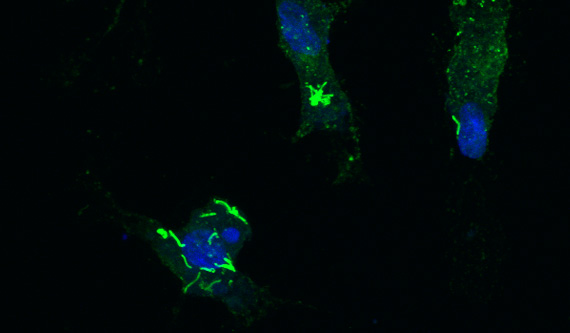
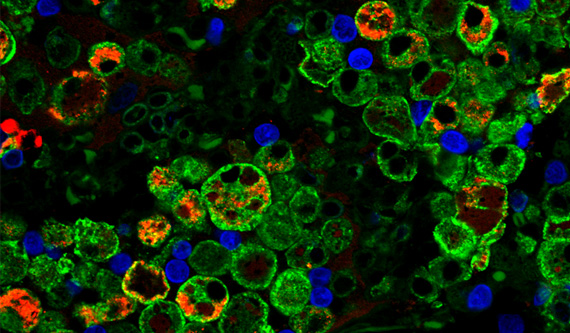
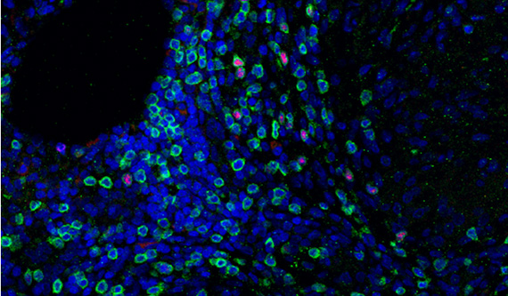

"Mycobacterium tuberculosis is the world's most successful pathogen,"said Denise Kirschner, a professor of microbiology and immunology at U-M. "It's the #1 cause of death due to infectious disease in the world."
It has also been around for a long time, claiming victims as varied as Eleanor Roosevelt, Frederic Chopin, John Keats and the ancient Egyptian Irtyersenu. While it is best known for conspicuous symptoms such as coughing up blood, the secret to its success is in its insidious, latent form. Only about 10 percent of people infected with the bacteria get active TB right away – the other 90 percent might not even know they harbor the bug.
A person with a latent TB infection has no symptoms and cannot transmit the disease. Instead, the bacteria wait for a moment of weakness that may come in the form of age or illness, such as HIV. Then they may have the opportunity to infect a new population. "We don't understand why some people develop active or latent disease or why the latent disease reactivates," said Kirschner.
Tough to treat
In spite of our incomplete understanding of TB, we can successfully treat it with antibiotics. The trouble is that the regimen, which requires multiple drugs, can last as long as nine months to a year. The slow pace is necessary to prevent excessive inflammation in the lungs. Inflammation leads to scar tissue, which makes it difficult to breathe if the lungs can't expand properly.
In latent tuberculosis, the immune system achieves a stalemate, with enough healthy white blood cells to maintain the perimeter while the bacteria survive inside the infected macrophages.
Unfortunately, humans don't always put up with long treatments well, especially when we no longer feel sick. Once TB retreats to its latent stage, the harsh side effects and cost of treatment – especially when TB is most common in some of the poorest regions of the world – are strong incentives to stop taking the drugs. This spurs the evolution of resistant strains.
The search for new and better treatments hinges on answering two questions: How can we maintain the latent phase, keeping TB from progressing to its contagious and deadly full-blown form? And how can we encourage the immune system just enough that it kills off the TB bacteria more quickly without creating scar tissue? Over a decade ago, Kirschner joined forces with JoAnne Flynn, a professor of microbiology and molecular genetics at the University of Pittsburgh, PA, to begin answering these questions. In 2005, they welcomed Jennifer Linderman, professor of chemical engineering at U-M, to their team.
Primates only
For the purpose of understanding diseases and developing new treatments, animal "models" stand in for humans in experiments. "Mice, although the most common model used, have very little [tuberculosis] pathology that resembles human disease," said Flynn. She studies tuberculosis in cynomolgus macaques, a species of monkey whose immune response bears a strong resemblance to our own. "Macaques are the only characterized model of true latent infection," she said, explaining that we need them to reveal how latent tuberculosis is established and maintained – and how drugs and vaccines affect this form of the disease.
The pieces of the tuberculosis puzzle are scattered among the results of thousands of experiments.
"JoAnne Flynn is a leader in the world in immune studies for TB in primates," said Kirschner. "She has the only biosafety level 3 facility with imaging facilities to study TB in a primate and has also done studies of TB and HIV-1 in primates." When a person with latent TB also has HIV, their risk of getting the active form is much higher. The odds are 10 percent over a lifetime for most people, but for those living with HIV, it's 10 percent per year – a major concern in places like southern Africa, where incidences of both TB and HIV are high. In addition, Flynn's equipment can produce detailed images of the infected tissue, revealing the structures that develop as immune cells surround and try to wall off the bacteria.
While monkeys are extremely valuable for studying tuberculosis, they are also expensive, and experimenting on such an advanced species requires strong justification. Researchers need a better "guinea pig" for testing more tentative treatment ideas, and Kirschner, Flynn and Linderman believe it is best made in silicon.
The battleground
To begin, they developed a computer simulation of TB in lung tissue. "It's the first place where the infection lands," Linderman explained. The bacteria travel in the tiny particles of sputum coughed up by one sufferer and inhaled by the next. See the video to find out how TB infections typically unfold.
Inside the black box
With advances in microscopy, and in tracking cells and chemicals, microbiologists have been able to see smaller and smaller details of how living things operate. The pieces of the tuberculosis puzzle are scattered among the results of thousands of experiments. "We call ourselves the reconstructionists in a reductionist world," said Kirschner. They pull these pieces together to develop a coherent picture of how TB attacks the body and how the body responds.
Linderman best understands the smallest pieces – the chemical messengers – and Kirschner is most familiar with the level of cells and larger systems. Meanwhile, Flynn provides the data for training and testing the model. In return, the model's results give her experimental group new ways of looking at their data.
"We come at the question from very different points of view, and it makes all of us think about tuberculosis in a different way," said Flynn. "It really expands our way of approaching and thinking about the big picture."
So far, the team has created reliable computer simulations of a granuloma in lung tissue, matching key observations of how granulomas form and progress. They have also explored what happens when certain messenger or message-receiving chemicals are suppressed or absent. These tests mirror experiments in which the gene for producing specific messenger chemicals or receptors was removed from the DNA of laboratory mice or monkeys. The model matches up with the results from these experiments, as well as clinical data about TB infections, and the team hopes that it accurately connects those dots to give the bigger picture.
"We can show you what's going on inside the lung," said Kirschner. When the team presents their videos of granuloma simulations to biologists at conferences, she added, "It's mind-blowing to them. This is a black box that they've never been able to see into."
Immune messengers
As Kirschner, Linderman and Flynn explore the inner workings of granulomas, they focus on the chemicals that influence the immune system. Chief among them is TNF, a chemical call for help.
An emerging theme from their recent studies is the importance of the TNF distribution within in the granuloma, which would be too invasive to measure in living animals. To create inflammation in the right place, the infected macrophages in the center need plenty of TNF around, with less TNF among the healthy cells toward the edges. This way, infected macrophages are likely to get "activated" so that they can kill the bacteria, or else be euthanized, while fewer healthy immune cells become needlessly inflamed or killed. Controlling the TNF distribution could help strengthen granulomas, balancing between keeping the bacteria in check and creating scar tissue.
This idea is supported by their study that explored why some arthritis and psoriasis patients on anti-TNF treatments developed active TB more often than those on other anti-TNF drugs. One of the factors giving the bacteria the upper hand was how well the drug penetrated the granuloma – if it reduced the amount of TNF among the infected macrophages, the granuloma could no longer control the bacteria.
The reconstructionists also examined the impact of TNF receptor molecules, which sit on cell membranes and grab passing TNF molecules, starting the cell's response. Since the receptors take TNF out of circulation, it is possible to manipulate the degree of inflammation by changing how quickly the receptors work. At the right speed, TNF concentrations stay high near the center of the granuloma, encouraging inflammation where it is needed, while reducing the amount of TNF among the healthy cells.
"We're really pleased with this series of papers because they're appearing in journals that primarily publish experimental work," said Linderman. "We are trying to have a conversation with experimentalists to show that computational tools can contribute to solving biological problems."
Most recently, the team studied how cell responses to TNF affected a granuloma's success in containing or defeating TB infections. Their results suggest that the best balance is achieved if the cells continue to produce TNF, keeping the call for backup loud and clear, while slowing down the inflammatory activities such as kicking macrophages into high gear or killing them off. At the ideal balance, the granuloma could efficiently kill bacteria without excessive damage to the lung. And these results are just the warm-up.
Beyond the lungs
Already, the model allows the team to look at a granuloma on the molecular, cellular and tissue level. It can examine processes that occur on timescales of seconds to months. And over the next year or two, Kirschner, Linderman and Flynn will extend it further.
One plan is to add virtual blood, making the model easier to test. "Taking a lung biopsy every few weeks isn't practical, but a blood draw is," said Linderman. By including blood in the simulation, they can determine what the concentrations of different cell types and chemicals found in a blood sample can say about what is happening inside the granulomas.
The team also intends to beef up their representation of lymph nodes, bean-sized organs that are crucial to the immune response. These garrisons for white blood cells are scattered around the body, and they dispatch the white blood cells that kill or activate macrophages. During the initial immune response, other cells carry bacteria back to at least one lymph node, spreading the infection and hindering the immune response.
Kirschner's group has incorporated HIV into previous models but not since 2008. "We have plans to return to that someday as well since JoAnne has such great data on co-infection in primates," said Kirschner.
A better cure
Kirschner, Flynn and Linderman hold that the key to making TB treatments more effective is finding out how to enhance the immune response without going overboard and creating inflammation that scars vital lung tissue. Experiments on a computer are much quicker than those within animals, which means that they can hunt through the multitude of possible drug combinations more efficiently – and without harming living creatures.
Eventually, they intend to use the model to pre-test TB drugs and immune treatments so that monkey experiments focus only on treatments that are likely to succeed. The team hopes to shorten the length of TB therapies, increasing the likelihood that patients will continue treatment until fully cured and perhaps turning the tide in the battle against one of our oldest enemies.
What percentage of the world population is infected with TB?
| TB related death | 25% |
|---|---|
| Other | 75% |